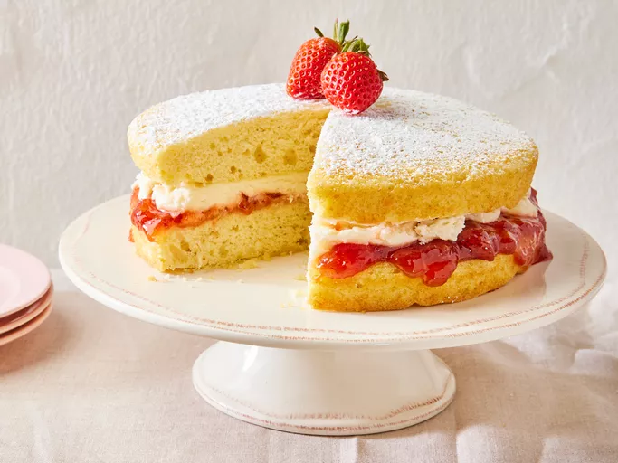

Victorian Sponge Cake

Victoria sponge cake was a favorite layer cake of Queen Victoria and
has become a classic British cake served at afternoon tea and other celebrations.
It's filled with strawberry jam and vanilla whipped cream.
Dust powdered sugar over the top if you'd like.
Ingredients Cake
- baking spray
- 1 ½ cups all-purpose flour (such as Gold Medal)
- 1 ½ teaspoons baking powder
- 1 tablespoon cornstarch
- ¾ teaspoon kosher salt
- 1 cup granulated sugar
- ½ cup unsalted butter or margarine, softened
- 2 large eggs, room temperature
- 2 teaspoon vanilla extract
- ½ cup whole milk, room temperature
- ½ cup strawberry or raspberry preserves
Baking Steps
- Sift the dry ingredients together in one bowl and set aside.
- Beat the butter and sugar with a mixer, then beat in the eggs and vanilla.
- Mix in the flour mixture on low speed, alternating with the milk.
- Bake in the prepared cake pans until a toothpick comes out clean.
- Spread the preserves on the top of one cooled cake layer.
- Make the whipped cream, then spread over the preserves.
- Top with the remaining layer, duster with powdered sugar, and top with berries.